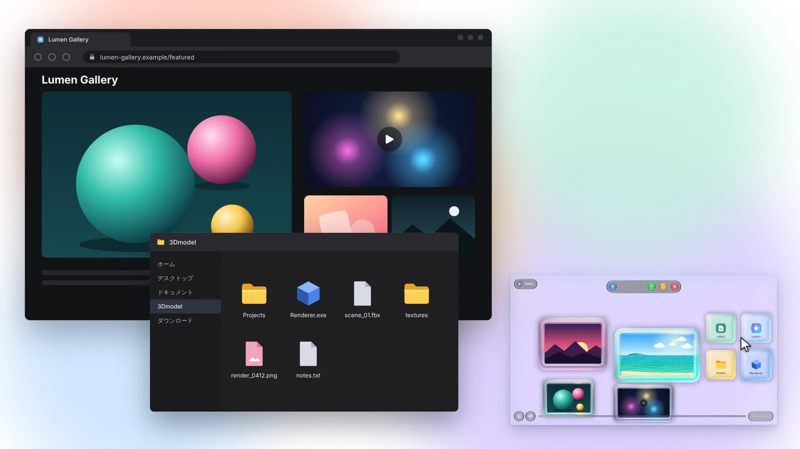

なんでもドラッグ＆ドロップDrag and drop anything
ローカルの画像や動画はもちろん、Web の画像・動画・ページのリンク、フォルダやアプリまで。置いたものはガラスのバブルとして並びます。Local images and videos, web images, videos and links, even folders and apps. Everything you drop lines up as a glass bubble.
画像動画Web リンクフォルダアプリ
ImagesVideosLinksFoldersApps